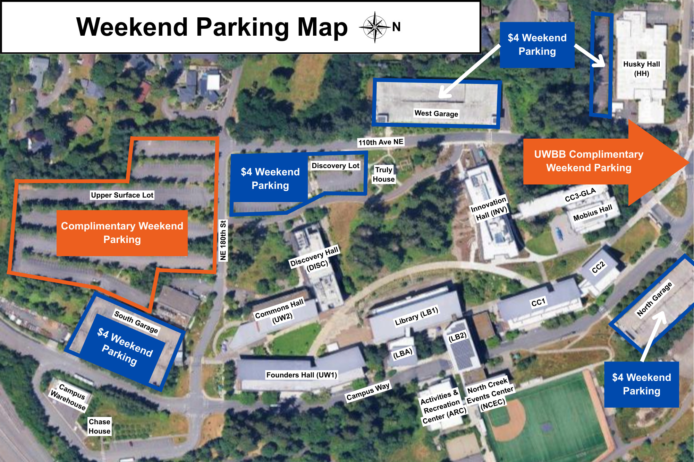

Map and Parking
Where each part of the conference happens, and where to leave your car.
Venues
Conference events will take place across the following locations on the UW Bothell campus. Please refer to the campus map for help getting around.
- Discovery Hall (DISC) 061 – Keynote presentations and opening message
- Discovery Hall (DISC) 162 & 252 – Parallel sessions
- North Creek Events Center – Lunches and the Saturday evening banquet with awards (7:00–9:00pm)
- Discovery Hall (DISC) Level 1 Lobby & Vista Area – Coffee breaks and casual hangout
- Discovery Hall (DISC) Lower Level – Registration desk
Parking
On Friday, July 31, parking is complimentary for in-person attendees. Register your vehicle on the parking portal below — it is the same page the QR code emailed to registered attendees opens. Please note it is valid only on Friday, July 31.
On Saturday, August 1 and Sunday, August 2, parking is free on the designated surface lots shown on the weekend parking map below.
Weekend parking map
